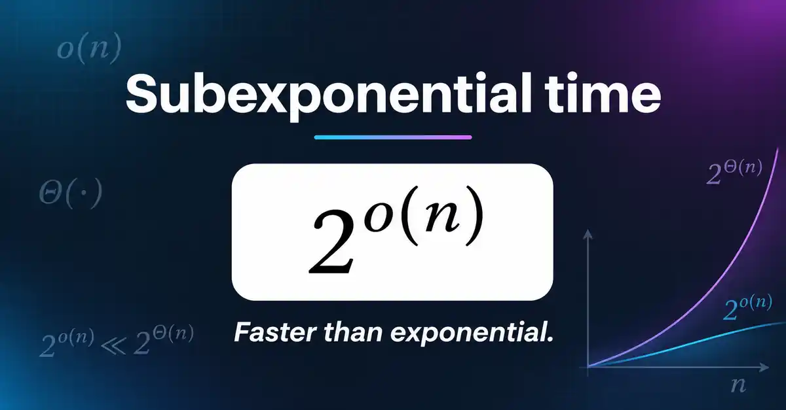

IDEA VISUAL · 8 NOVIEMBRE 2026

La complejidad no es imposibilidad
A veces cambiar el método cambia toda la trayectoria.
En matemáticas, 2o(n) representa crecimiento subexponencial. Aquí sirve como analogía del pensamiento crítico.
Cuestionar los supuestos. Seguir la prueba.
La imagen es una ilustración, no una afirmación de que Por Derecho haya demostrado un algoritmo de complejidad subexponencial ni una conclusión sobre procedimientos jurídicos.